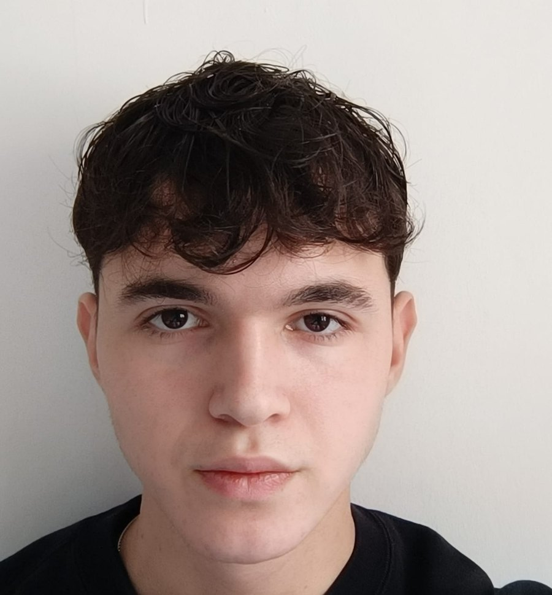

Joven de 19 años interesado en datos, tecnología y geopolítica. Curioso, analítico y con ganas de aprender. Busco un equipo con quien crecer.

Tengo 19 años, nací en Salamanca y vivo en Málaga. Soy atrevido, auténtico y exigente, y lo demuestro con hechos: me vine a vivir aquí solo, sin conocer a nadie, para conocer mundo, ser más independiente y buscar oportunidades lejos de mi ciudad natal.
Me mueven la economía y la geopolítica, y también la filosofía, la psicología y la inteligencia artificial. Me gusta entender cómo se toman las decisiones, las de los países, las de los mercados y las de las personas.
Sigo canales como Memorias de Pez y Solo Fonseca, leo a Henry Hazlitt (La economía en una lección) y organizo lo que aprendo en cuadernos de NotebookLM, como uno sobre el sistema J-Alert de Japón.
Uso Gemini, NotebookLM, ChatGPT y Claude como herramientas de trabajo. Mi experiencia en generación de vídeo hiperrealista es mínima: el proyecto está pospuesto hasta tener herramientas de pago como Higgsfield o claves de API.
Documentación del proceso del anuncio: prompts, iteraciones y decisiones.
Primeras bases en n8n: una automatización sencilla que responde correos automáticamente al detectar palabras clave.
Fichas y exámenes para mi padre, profesor de primaria. Siempre sienta bien echar una mano a quien te ha dado tanto, pero necesito un reto mucho mayor.
Concurso del Banco Central Europeo y el Banco de España en el que equipos de institutos analizan la economía de la zona euro. Mi equipo ganó la 13ª edición. Analizamos geopolítica e inflación y fui el orador ante el jurado.
Apoyo a los ponentes del evento de tecnología y talento.
Ninguna asignatura suspensa. Notas destacadas en Análisis Económico, Comportamiento del Consumidor, Gestión del Producto y Branding, Historia del Comercio y Matemáticas para la Economía y la Empresa.
Busco prácticas y proyectos donde aprender rápido y aportar desde el primer día.